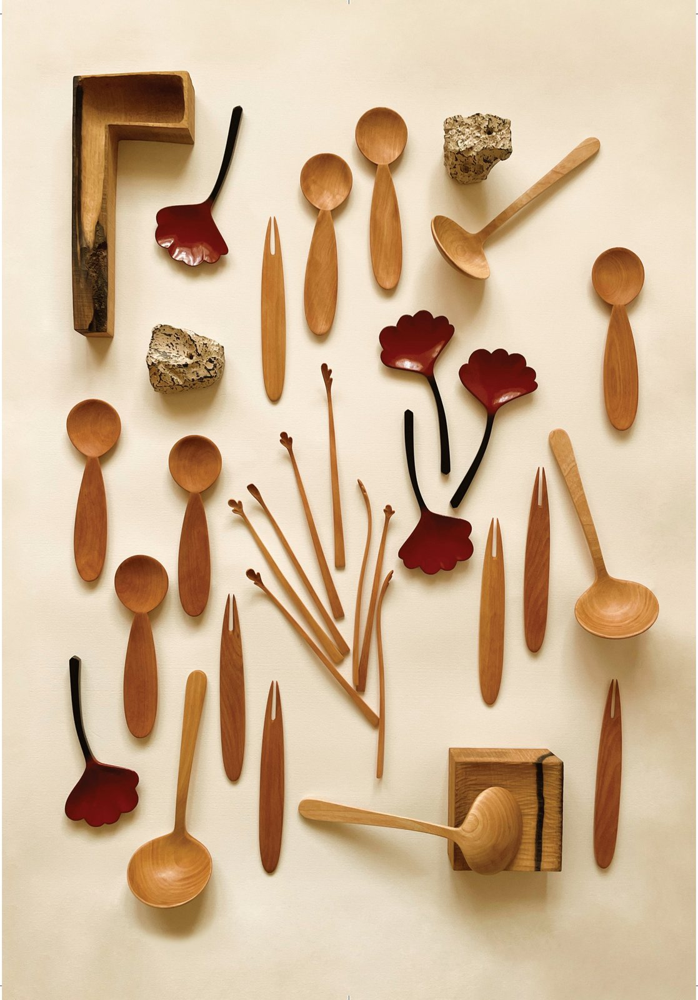

Writing · On Seeds of Time
Seeds of time

A piece of log, good for nothing at all. Could something start again even in there?
I think of what I make as seeds of time. One leaves my hands, reaches someone, and slowly opens inside their days. I'm rooting for it from here.
Useful and useless, stumbling stone and stepping stone, a single day and forever — the pleasure is in crossing between them. Somewhere on the border of the everyday and art, I keep walking, a step at a time.
I've been carving and shaping wood since 2016. Every mark, every change of colour on a seed that left my hands, is time it has spent with you. I hope beauty comes to dwell in the days the seed takes to open.